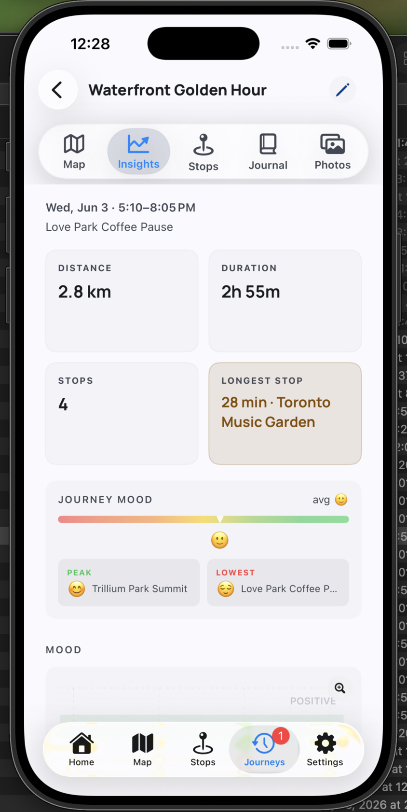
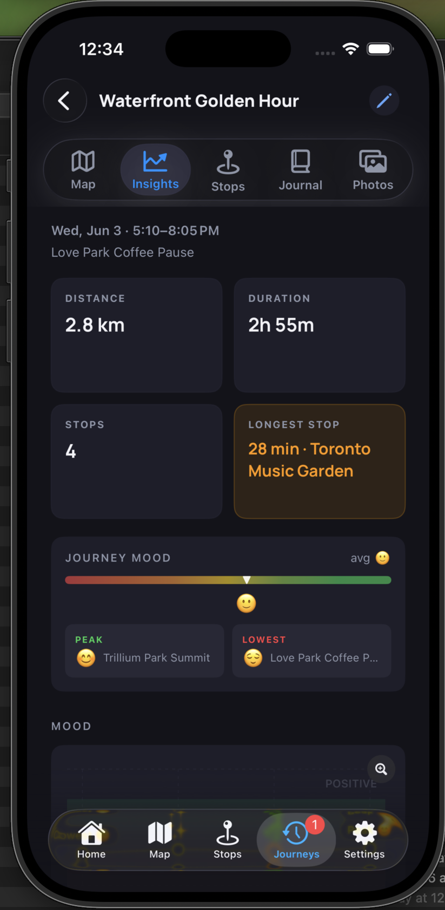

Total recorded distance across the journey.
Insights Help
Read the patterns behind a journey.
Insights summarizes distance, duration, stops, mood, and standout moments so the day is easier to understand.


What You Can See Here
The time window covered by the journey.
Stop count and longest stop help describe the pace.
Mood cards show average, peak, and lowest recorded mood.
Read Insights
Use summaries to understand the whole journey.
Insights are designed for quick comparison, not detailed editing. Use them to decide where to look next.
1Start with the top cards
Distance, duration, and stop count give the basic scale of the journey.
2Look for standout moments
Longest stop, peak mood, and lowest mood point to places worth reviewing.
3Use charts for change over time
Mood and weather charts help show how the journey shifted from stop to stop.
4Open the related screen
Use Stops or Journal when an insight points to something you want to refine.
Questions
Common Insights questions
Why is longest stop highlighted?
Duration often explains the most meaningful pause or the main activity in a journey.
Where do mood values come from?
Mood insights use the moods saved on stops in the journey.
Can I edit insights directly?
Edit the source details in Stops or Journal. Insights update from that journey data.